Dark Energy Survey
The Dark Energy Survey (DES)
Collaboration is an international project with the goal of carrying out
a survey to determine the dark energy and dark matter densities and the
dark-energy properties, parameterized with its equation of state, w,
with great statistical precision (5%) through four independent
techniques: redshift distribution and evolution of galaxy clusters,
weak gravitational lensing on large scales, evolution of galaxy
clustering, and type-Ia supernova distances. The four methods are
sensitive to different combinations of cosmological parameters and are
subject to different systematical uncertainties. Furthermore, combining
these four techniques, it will be possible to separate the effect of
dark energy on the geometry of the universe from the effect on the
growth of structure, resulting in a robust and improved determination
of the properties of the dark energy. The survey will image 5000 sq.
deg in the southern sky and collect 300 million galaxies, 30000 galaxy
clusters, and 2000 type-Ia supernovae. It will be carried out over a 5
year period using a new 3 sq. deg mosaic camera (DECam) mounted at the
prime focus of the 4m Blanco telescope at CTIO in Chile.
SCIENCE PROGRAM
Dark Energy
In 1998 observational evidence
surfaced that the expansion of the universe is accelerating, even if
gravitational attraction among ordinary matter restrains the
expansion. The conclusion is that a mysterious form of energy, dubbed
“dark energy,” whose properties are basically unknown,
is the dominant component of the universe at the current time,
with about 70-75% of all mass-energy. The main scientific aim of the
collaboration is to determine the properties of the dark energy,
by measuring the w parameter of its equation of state (p=wρ). If
the dark energy turns out to be Einstein’s cosmological constant,
then w=-1 everywhere at all times. However, in general, w will depend
on cosmic time, or equivalently on redshift z:
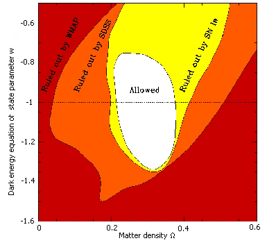
DES will measure three parameters:
- w0 , the equation of state now
- wa , which measures the rate of change of w
- ΩΛ , the dark energy density normalized to the critical density
Techniques
DES aims at extracting cosmological information on dark energy from four cosmological probes:
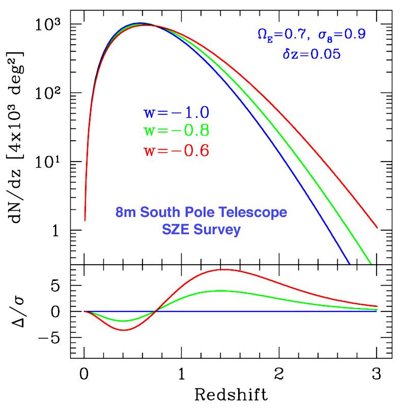
1) Galaxy cluster counting and spatial distribution of clusters to z=1.3.
DES will make a detailed optical
measurement of galaxy clusters, including photometric redshifts, in
conjunction with the South Pole Telescope (SPT) survey that will detect
clusters through the Sunyaev-Zel’dovich effect.
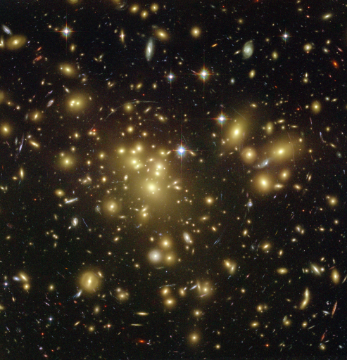
2) Weak gravitational lensing
DES will measure shapes and
photometric redshifts for 300 million galaxies and enable accurate
measurement of lensing by largescale structure.
3) Galaxy angular clustering
DES will measure the angular
clustering of galaxies in photometric redshift shells out to z~1.1.
This will provide cosmological information from the shape of the power
spectrum transfer function and the distance to each redshift shell.
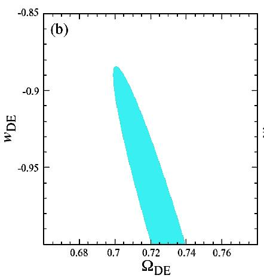
4) Hubble diagram for type-Ia SNe
Type-Ia SNe can be turned into
cosmological standard candles through the relationship between their
duration and luminosity. From ground-based telescopes, type-Ia SNe can
provide luminosity distances up to redshifts around 1, with about 7%
precision. The Hubble diagram (distance vs. redshift) measures the
history of the expansion rate of the universe, which depends on the
dark energy properties.
Type-Ia Supernova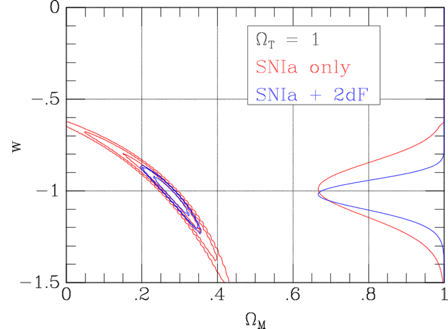
In 1998, usage of low- and
high-redshift type-Ia supernovae (SNe) as precision distance indicators
provided the first direct evidence for the accelerating expansion
of the Universe, and the existence of dark energy.
DES will use 10% of its allocated
time to discover and measure well-sampled r, i and z light curves for
about 2000 type-Ia supernovae in the redshift range 0.3<z<0.75
through repeat imaging of a 40 sq. deg. region. These SNe will provide
relative distance estimates to constrain the properties of the dark
energy.
Assuming flat cosmology, plot
of projected constraints from the DES sample of 1900 SNe Ia at
redshifts from z=0.25 to 0.75 (red) and combined with current
galaxy power spectrum measurements (blue). Right-hand curves
marginalize over ΩM. Follow-up spectroscopy assumed for a portion
of the SN sample.
INSTRUMENT DESIGN
Instrument
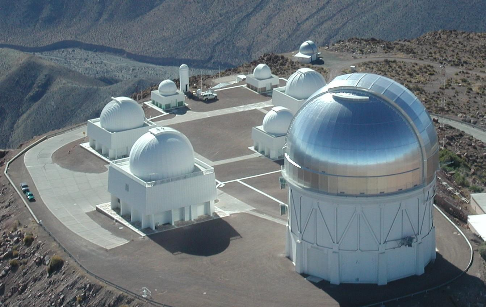
DECam will be placed in the Blanco
4-meter telescope at Cerro Tololo Inter-American Observatory (CTIO) in
Chile. The DES collaboration will use this instrument as a survey
instrument during 525 nights between Oct. and Feb. during the years
2010 to 2014 (30% of the telescope time).
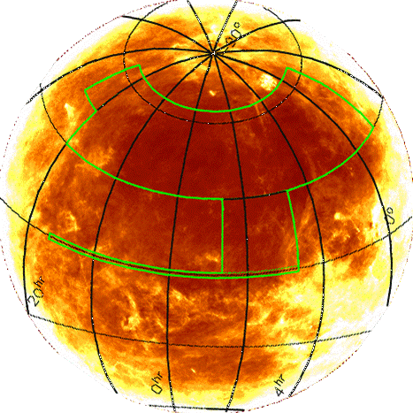
Survey
It will cover 5000 sq. deg. of the
South Galactic Cap. 4000 sq. deg. overlapping with the South Pole
Telescope Sunyaev-Zel’dovich survey and 200 sq. deg. with
SDSS Stripe 82.
DECam (DES Camera)
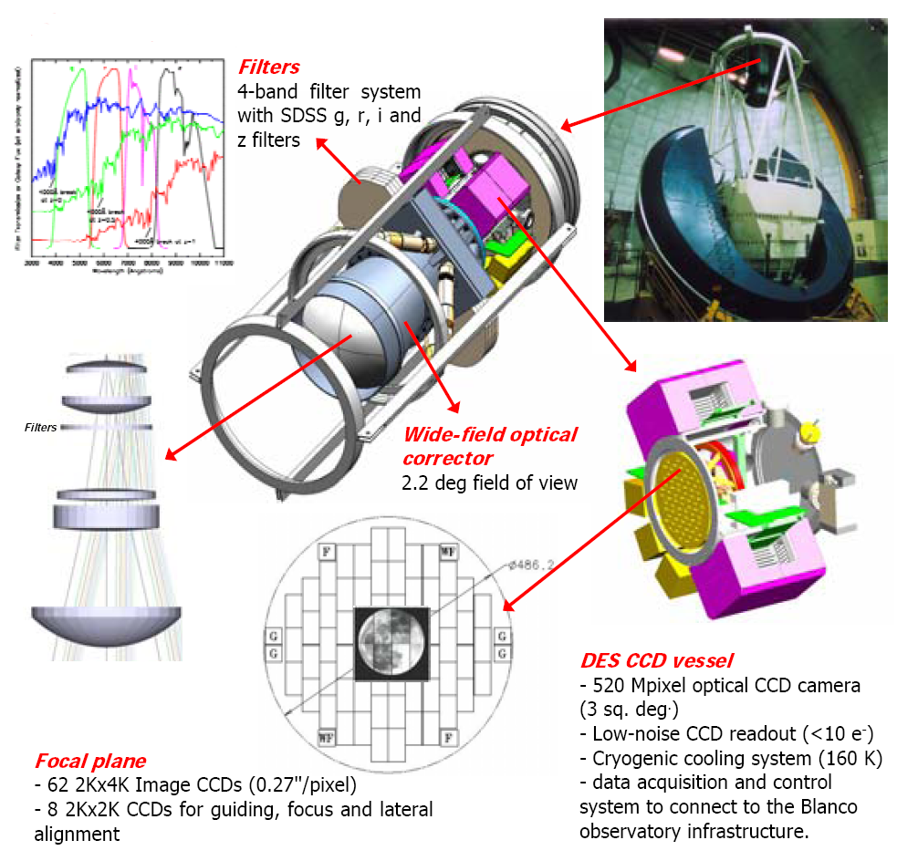
CCDs
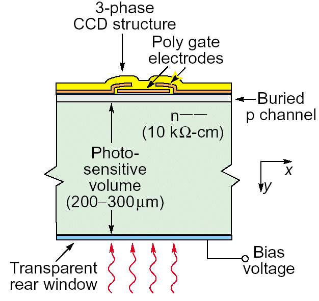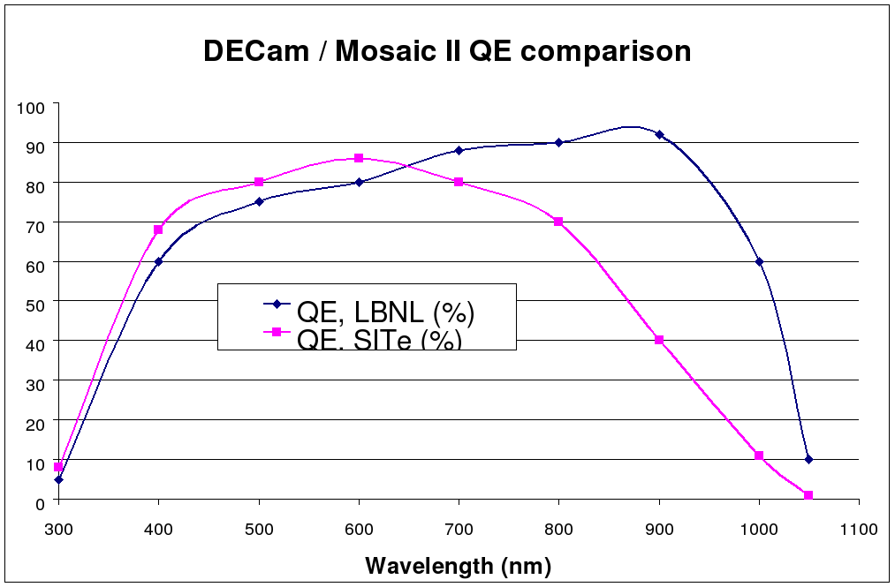
A key component of the project are the CCDs developed by LBNL, more sensitive to red light.
- QE> 50% in z-band (825-1100 nm)
- 250 μm thick, fully depleted
- 15μm pixels, 0.27”/pixel
- 2 readout channels/device
- readout time ~17sec (<10e- readout noise)
Readout system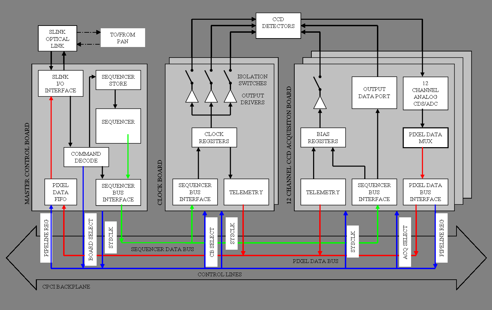
- Based on Monsoon system developed by NOAO
- Consists of 3 Boards:
• Master Control Board (MCB)
• Clock & Bias Board (CBB)
• Data Acquisition Board (ACQ)
- DES modifications include high-density ACQ (12 channels) and a simplified CBB
- Will be housed in three thermally controlled crates
• Constant interior temperature for stable electrical performance
• Ambient temperature will be tracked during night to avoid thermal plumes
http://www.darkenergysurvey.org